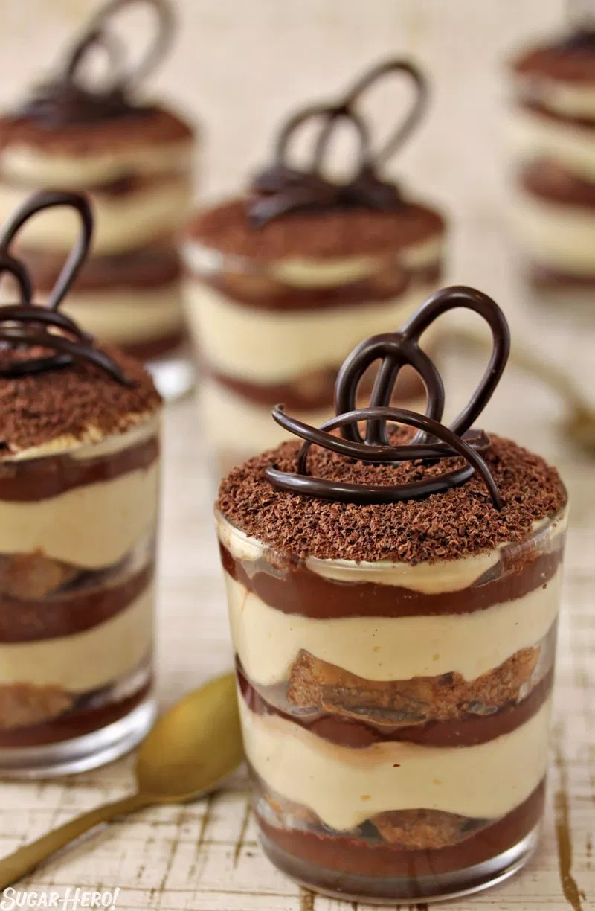

CLASSIC TIRAMISU

Ingredients
- 4
large egg yolk
- ½
cup/100 grams granulated sugar, divided
- ¾
cup heavy cream
- 1
cup/227 grams mascarpone (8 ounces
- 1¾
cups good espresso or very strong coffee
- 2
tablespoons unsweetened cocoa powder
- 1 to 2
ounces bittersweet chocolate
Instructions
- Using an electric mixer in a medium bowl, whip together egg yolks and ¼ cup/50 grams sugar until very pale yellow and about tripled in volume. A slight ribbon should fall from the beaters (or whisk attachment) when lifted from the bowl. Transfer mixture to a large bowl, wiping out the medium bowl used to whip the yolks and set aside
- In the medium bowl, whip cream and remaining ¼ cup/50 grams sugar until it creates soft-medium peaks. Add mascarpone and continue to whip until it creates a soft, spreadable mixture with medium peaks. Gently fold the mascarpone mixture into the sweetened egg yolks until combined
- Using a sifter, dust the bottom of a 2-quart baking dish (an 8x8-inch dish, or a 9-inch round cake pan would also work here) with 1 tablespoon cocoa powder.
- Dust top layer with remaining tablespoon of cocoa powder. Top with shaved or finely grated chocolate, if desired
- Cover with plastic wrap and let chill in the refrigerator for at least 4 hours (if you can wait 24 hours, all the better) before slicing or scooping to serve.